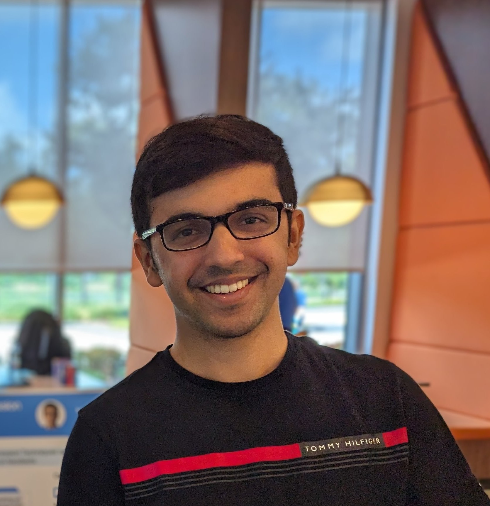

Course Overview
Large datasets pose difficulties across the machine learning pipeline. They are difficult to visualize and introduce computational, storage, and communication bottlenecks during data preprocessing and model training. Moreover, high capacity models often used in conjunction with large datasets introduce additional computational and storage hurdles during model training and inference. This course is intended to provide a student with the mathematical, algorithmic, and practical knowledge of issues involving learning with large datasets. Among the topics considered are: data cleaning, visualization, and pre-processing at scale; principles of parallel and distributed computing for machine learning; techniques for scalable deep learning; analysis of programs in terms of memory, computation, and (for parallel methods) communication complexity; and methods for low-latency inference.
Prerequisites
Students are required to have taken a CMU introductory machine learning course (10-301, 10-315, 10-601, 10-701, or 10-715). A strong background in programming will also be necessary; suggested prerequisites include 15-210, 15-214, or equivalent. Students are expected to be familiar with Python or learn it during the course.
Textbooks
There will be no required textbooks, though we may suggest additional reading in the schedule below.
Course Components
The requirements of this course consist of participating in homework assignments, a mini-project, and two exams. Attending lectures is not mandatory but is highly encouraged. The grading breakdown is the following:
- 22.5% Exam 1
- 22.5% Exam 2
- 40% Homework (5 Assignments, 8% Each)
- 15% Mini-Project (10-605 only)
10-405, 10-605 Differences
10-605 students will perform a mini-project, while 10-405 students will not.
Exams
You are required to attend all in person exams. The exams will be given during class. Please plan your travel accordingly as we will not be able accommodate individual travel needs (e.g. by offering the exam early).
If you have an unavoidable conflict with an exam (e.g. an exam in another course), notify us by filling out the exam conflict form which will be released on Piazza a few weeks before the exam.
Homework
The homeworks will be divided into two components: programming and written. The programming assignments will ask you to implement ML algorithms from scratch; they emphasize understanding of real-world applications of ML, building end-to-end systems, and experimental design. The written assignments will focus on core concepts, “on-paper” implementations of classic learning algorithms, derivations, and understanding of theory.
Mini Project (10-605 only)
Students will make create groups and participate in a Mini-project. Mini-Project details will be released later in the semester.
Piazza
We will use Piazza for class discussions.
Please go to this Piazza website to join the course forum (note: you must use a cmu.edu email account to join).
We strongly encourage students to post on this forum rather than emailing the course staff directly (this will be more efficient for both students and staff). Students should use Piazza to:
- Ask clarifying questions about the course material.
- Share useful resources with classmates (so long as they do not
contain homework solutions).
- Look for students to form study groups.
- Answer questions posted by other students to solidify your own
understanding of the material.
The course Academic Integrity Policy must be followed on the message boards at all times.
Do not post or request homework solutions! Also, please be polite.
Gradescope
We use Gradescope to collect PDF submissions of open-ended questions on the homework (e.g. mathematical derivations, plots, short answers). The course staff will manually grade your submission, and you’ll receive personalized feedback explaining your final marks.
You will also submit your code for programming questions on the homework to Gradescope. After uploading your code, our grading scripts will autograde your assignment by running your program on a VM. This provides you with immediate feedback on the performance of your submission.
Regrade Requests
If you believe an error was made during manual grading, you’ll be able to submit a regrade request on Gradescope. For each homework, regrade requests will be open for only **1 week** after the grades have been published. This is to encourage you to check the feedback you’ve received early!
Course Staff
Instructional Staff

Jacob Rast
Head TA
Yiwen Zhao
OH: Thursdays 09:00am - 10:00am

Jayesh Singla
OH: Mondays 05:30pm - 06:30pm
Siyuan Lin
OH: Wednesdays 02:00pm - 03:00pm

Li Chen
OH: Wednesdays 10:00am - 11:00am

Atharva Anand Joshi
OH: Tuesdays 06:00pm - 07:00pm
Gabriel Fonseca
OH: Fridays 11:00am - 12:00pm
Katie Zhang
Starting Feb 17; OH: Tuesdays 03:00pm - 04:00pm (Remote)
Schedule (Subject to Change)
| Date |
Lecture |
Resources |
Announcements |
| Data Pre-Processing and Visualization, Distributed Machine Learning |
| Jan 17 |
Introduction (slides, recording)
|
|
HW1 Released |
| Jan 19 |
Recitation 1: Introduction to Pyspark and Databricks (slides, recording)
|
Lab Notebook |
| Jan 22 |
Distributed Systems, Map-Reduce (slides, recording)
|
Tutorial on PCA |
|
| Jan 24 |
Visualization: PCA (slides, recording)
|
JL Theorem |
|
| Jan 26 |
Recitation 2: Linear Algebra Review (slides, recording)
|
Lab Notebook |
HW2 Released |
| Jan 29 |
Visualization: JL + t-SNE (slides, recording)
|
|
HW1 Due |
| Jan 31 |
Distributed Linear Regression (slides, recording)
|
|
|
| Feb 2 |
Recitation 3: HW1 Review (recording)
|
|
|
Feb 5 |
Distributed PCA & Logistic Regression (slides, slides for Scaling Up, recording)
|
|
|
| Feb 7 |
Scaling up linear models: Kernel form & Nyström (slides, recording)
|
Calculus Review
Hash kernels, I
Hash kernels, II
Count-min sketch |
|
| Feb 9 |
Recitation 4: AWS Setup (slides, recording)
|
|
HW3 Released |
| Feb 12 |
Hashing Theory, CMS (slides, recording)
|
|
|
| Feb 14 |
LSH (slides, recording)
|
|
HW2 Due |
| Feb 16 |
Recitation 5: Homework 2 Solutions (recording)
|
|
|
| Feb 19 |
Scaling up nonlinear models: Kernel machines & random Fourier features (slides, recording)
|
LSH |
|
| Feb 21 |
Randomized Linear Algebra (slides, slides2, recording)
|
|
HW3 Due |
| Feb 23 |
Recitation 6: Practice Exam 1 Solutions (slides, recording)
|
Homework 3 Solutions (video) |
|
| Feb 26 |
Exam 1 |
|
|
| Feb 28 |
No class
|
|
HW4 Released |
| Mar 1 |
Recitation 7: HW4 Part A Tutorial (recording)
|
|
|
| Mar 4 |
Spring Break (No Classes)
|
|
|
| Mar 6 |
Spring Break (No Classes)
|
|
|
| Mar 8 |
Spring Break (No Classes)
|
|
|
| Scalable Deep Learning: Training, Tuning, and Inference |
| Mar 11 |
Deep learning, DL frameworks, and Hardware (slides)
|
|
|
| Mar 13 |
Optimization for DL (GD, SGD, Cocoa/Duality)
|
|
HW 4 Part A Due |
| Mar 15 |
Recitation 8: Tensorflow Tutorial
|
|
|
| Mar 18 |
Optimization for DL (Momentum, Adam)
|
|
HW4 Part B Due, HW5 Released, Mini-projects Released |
| Mar 20 |
Guest lecture: Alex Cabrera
|
|
|
| Mar 22 |
Recitation 9: Optimization & Learning Rates
|
|
|
| Mar 25 |
Inference + Model Compression
|
|
|
| Mar 27 |
Hyperparameter Tuning
|
|
|
| Mar 29 |
Recitation 10: Homework 4 Solutions
|
|
Mini Project Survey Due |
| Apr 1 |
Parallel / Distributed DL
|
|
|
| Advanced Topics |
| Apr 3 |
AutoML for Diverse Tasks
|
|
HW5 Due |
| Apr 5 |
Recitation 11: Homework 5 Solutions
|
|
|
| Apr 8 |
Scaling Laws for Foundation Models
|
|
|
| Apr 10 |
Training LLMs from Scratch at Mosaic, Guest Lecture: Jonathan Frankle
|
|
|
| Apr 12 |
Spring Carnival (No Classes)
|
|
|
| Apr 15 |
RL with large Data
|
|
|
| Apr 17 |
RL with large Data continued
|
|
Mini-Projects Due |
| Apr 19 |
Recitation 12: Exam 2 Office Hours
|
|
|
| Apr 22 |
Course Summary and Exam Review
|
|
|
| Apr 24 |
Exam 2 |
|
|
General Policies
Late Homework Policy
You receive 4 total grace days for use on any homework assignment. We will automatically keep a tally of these grace days for you; they will be applied greedily. No assignment will be accepted more than 2 days after the deadline without written permission from the Head TAs or the Professors. You may not use more than 2 grace days on any single assignment.
All homework submissions are electronic. As such, lateness will be determined by the latest timestamp of any part of your submission. For example, suppose the homework requires submissions to both Gradescope Written and Programming– if you submit your Written on time but your Programming 1 minute late, your entire homework will be penalized for the full 24-hour period.
Extensions
In general, we do not grant extensions on assignments. There are several exceptions:
- Medical Emergencies: If you are sick and unable to complete an assignment or attend class, please go to University Health Services. For minor illnesses, we expect grace days to provide sufficient accommodation. For medical emergencies (e.g. prolonged hospitalization), students may request an extension afterwards by contacting their Student Liaison or Academic Advisor and having them reach out to the course Professors or Head TAs on their behalf.
- Family/Personal Emergencies: If you have a family emergency (e.g. death in the family) or a personal emergency (e.g. mental health crisis), please contact your academic adviser or Counseling and Psychological Services (CaPS). In addition to offering support, they will reach out to the instructors for all your courses on your behalf to request an extension.
- University-Approved Absences: If you are attending an out-of-town university approved event (e.g. multi-day athletic/academic trip organized by the university), you may request an extension for the duration of the trip. You must provide confirmation of your attendance, usually from a faculty or staff organizer of the event.
For any of the above situations, you may request an extension by emailing the Head TAs (smilani@andrew.cmu.edu and jrast@andrew.cmu.edu). The email should be sent as soon as you are aware of the conflict and at least 5 days prior to the deadline. In the case of an emergency, no notice is needed.
Audit Policy
Official auditing of the course (i.e. taking the course for an “Audit” grade) is not permitted this semester.
Unofficial auditing of the course (i.e. attending the lectures in person when their is space available) is welcome and permitted without prior approval. Unofficial auditors will not be given access to course materials such as homework assignments and exams.
Pass/Fail Policy
Pass/Fail is allowed in this class, no permission is required from the course staff. The grade for the Pass cutoff will depend on your program. Be sure to check with your program / department as to whether you can count a Pass/Fail course towards your degree requirements.
Accommodations for Students with Disabilities
If you have a disability and have an accommodations letter from the Disability Resources office, I encourage you to discuss your accommodations and needs with the Head TAs (Steph or Jacob) as early in the semester as possible. I will work with you to ensure that accommodations are provided as appropriate. If you suspect that you may have a disability and would benefit from accommodations but are not yet registered with the Office of Disability Resources, I encourage you to contact them at
access@andrew.cmu.edu.
Academic Integrity Policies
Read this Carefully
Collaboration among Students
- The purpose of student collaboration is to facilitate learning, not to circumvent it. Studying the material in groups is strongly encouraged. It is also allowed to seek help from other students in understanding the material needed to solve a particular homework problem, provided no written notes (including code) are shared, or are taken at that time, and provided learning is facilitated, not circumvented. The actual solution must be done by each student alone.
- The presence or absence of any form of help or collaboration, whether given or received, must be explicitly stated and disclosed in full by all involved. Specifically, each assignment solution must include the corresponding collaboration section.
- If you gave help after turning in your own assignment and/or after answering the collaboration section, you must update your answers before the assignment’s deadline, if necessary by emailing the course staff or a Piazza post.
- Collaboration without full disclosure will be handled severely, in compliance with CMU’s Policy on Academic Integrity.
Previously Used Assignments
Some of the homework assignments used in this class may have been used in prior versions of this class, or in classes at other institutions, or elsewhere. Solutions to them may be, or may have been, available online, or from other people or sources. It is explicitly forbidden to use any such sources, or to consult people who have solved these problems before. It is explicitly forbidden to search for these problems or their solutions on the internet. You must solve the homework assignments completely on your own. We will be actively monitoring your compliance. Collaboration with other students who are currently taking the class is allowed, but only under the conditions stated above.
Generative AI
Students are encouraged to use generative AI tools (such as ChatGPT) the same way they would interact with any other collaborator. In particular, any substantive collaboration should be disclosed, and all solutions should be entirely the student’s own work. To ensure the latter, any notes or results from a collaboration should remain closed while writing up the solution, so that no material is accidentally transferred.
Policy Regarding “Found Code”
You are encouraged to read books and other instructional materials, both online and offline, to help you understand the concepts and algorithms taught in class. These materials may contain example code or pseudo code, which may help you better understand an algorithm or an implementation detail. However, when you implement your own solution to an assignment, you must put all materials aside, and write your code completely on your own, starting “from scratch”. Specifically, you may not use any code you found or came across. If you find or come across code that implements any part of your assignment, you must disclose this fact in your collaboration statement.
Duty to Protect One’s Work
Students are responsible for proactively protecting their work from copying and misuse by other students. If a student’s work is copied by another student, the original author is also considered to be at fault and in gross violation of the course policies. It does not matter whether the author allowed the work to be copied or was merely negligent in preventing it from being copied. When overlapping work is submitted by different students, both students will be punished.
To protect future students, do not post your solutions publicly, neither during the course nor afterwards.
Penalties for Violations of Course Policies
All violations (even first one) of course policies will always be reported to the university authorities (your Department Head, Associate Dean, Dean of Student Affairs, etc.) as an official Academic Integrity Violation and will carry severe penalties.
- The penalty for the first violation is a one-and-a-half letter grade reduction. For example, if your final letter grade for the course was to be an A-, it would become a C+.
- The penalty for the second violation is failure in the course, and can even lead to dismissal from the university.
Acknowledgments
This course is based in part on material developed by Virginia Smith, Heather Miller, William Cohen, Anthony Joseph, and Barnabas Poczos.
Previous courses: 10-605/10-805, Fall 2023, 10-605/10-805, Fall 2022, 10-405/10-605, Spring 2022, 10-605/10-805, Fall 2021; 10-405/10-605, Spring 2021; 10-605/10-805, Fall 2020; 10-405/10-605, Spring 2020.